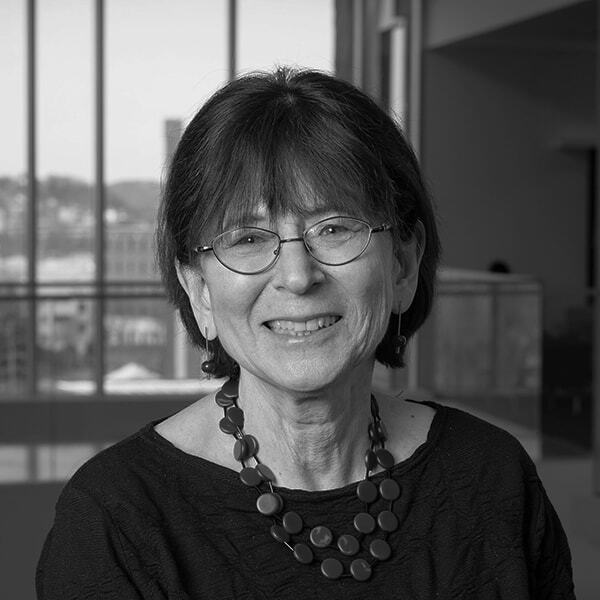
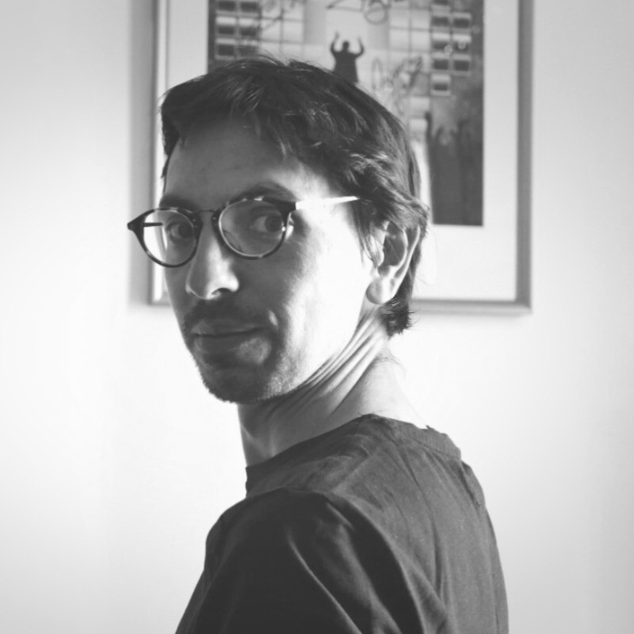

When: Sunday, October 11, 10:30 AM
With: Lenore Blum, Johannes Kleiner, Camilo Miguel Signorelli


Abstract
On the eve of the seventh Models of Consciousness conference (MoC7), this opening session brings together three people involved in the conference and the Association for Mathematical Consciousness Science (AMCS), which organises it. Since its first edition in Oxford in 2019, the conference has travelled from an online edition to Stanford, Oxford, Bamberg, Hokkaido, and now Copenhagen. The conversation will cover how the series and the association came about, what a mathematical approach to consciousness involves, and how the field has changed over these editions. It will also introduce this year’s programme: its four themes (philosophical foundations; methodologies and measures; AI, LLMs and consciousness science; phenomenology), and a new collaborative project, in which participants will work towards a shared paper on concepts, methodological standards and future priorities for the field.
Lenore Blum is Distinguished Career Professor of Computer Science, Emerita, at Carnegie Mellon University. Her research has moved from logic and model theory to a theory of computation over the real numbers. More recently, with Manuel and Avrim Blum, she has worked on the Conscious Turing Machine, a formal model of consciousness from the perspective of theoretical computer science. She was elected inaugural President of the AMCS in 2021 and sits on the MoC7 advisory board. She has also worked throughout her career to increase the participation of women in mathematics and computer science.
Johannes Kleiner is a mathematician and physicist working on mathematical approaches to consciousness. After a PhD in mathematics at the University of Regensburg, he completed a second doctorate at LMU Munich on what is now called mathematical consciousness science. He is based at the Institute for Psychology of the University of Bamberg. He was the founding chair of the AMCS board and is part of the MoC7 organising committee.
Camilo Miguel Signorelli studies the structure of conscious experience from phenomenological, mathematical and life-centred perspectives, and its implications for physical theories and AI. His work spans mathematical phenomenology, compositional models of consciousness and the neuroscience of consciousness, with past collaborations at the University of Oxford and INSERM-CEA (UNICOG). He is now at the Center for Philosophy of Artificial Intelligence, University of Copenhagen, and is one of the MoC7 organisers.